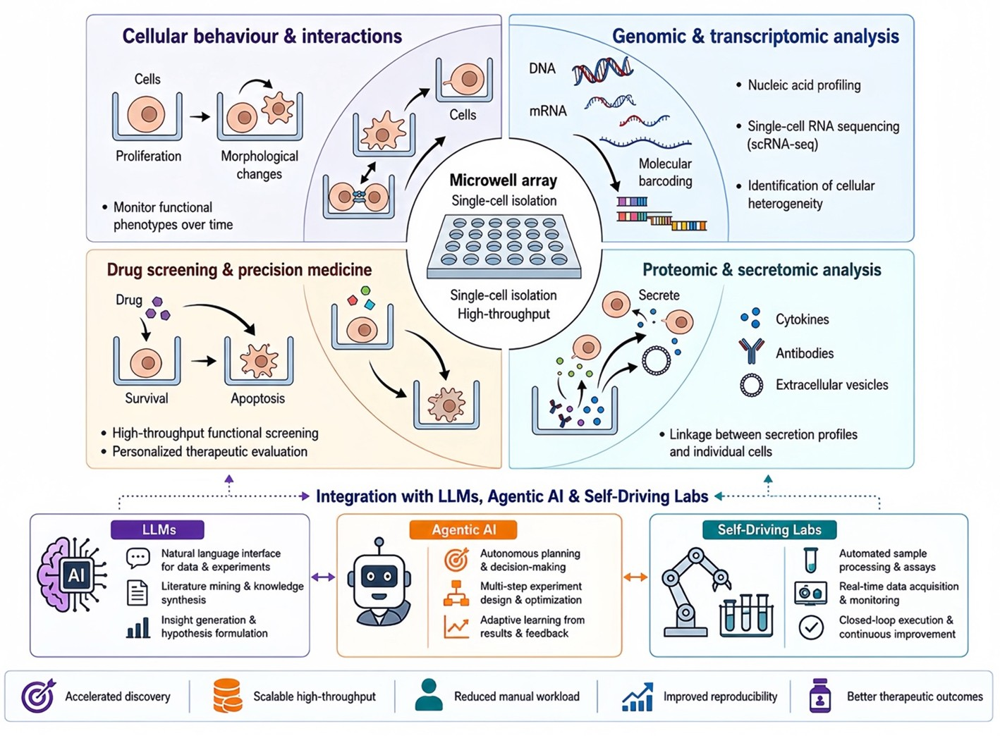

iMicroscope: Autonomous Single Cell Analysis with Microwell Platform and Super Intelligence

Single-cell analysis has become an essential approach for understanding cellular heterogeneity and its implications in biological function, disease progression and therapeutic response. Microwell platforms provide a versatile approach for single-cell analysis by spatially confining individual cells while maintaining access for imaging, perturbation and downstream molecular measurements. This review examines major applications of microwell platforms in cellular behaviour and cell–cell interactions, secretome analysis, genomic and transcriptomic profiling, and drug screening and precision medicine. Across these applications, microwells provide a distinct advantage by preserving cell identity and enabling spatial, temporal, functional and molecular measurements to be linked within the same workflow. They examine the emerging integration of artificial intelligence (AI) for automated image analysis, cell tracking, phenotype classification, behavioural analysis and prediction of cellular and drug responses.
Looking ahead, large language model (LLM) agents [1,2] are being explored to close the loop. Nguyen . demonstrated an LLM-driven system that writes CAD code for microwell designs and applies multimodal LLM and ML to classify well occupancy (achieving ~0.92 accuracy) [3]. More broadly, recent advances in autonomous experimentation further highlight the potential of integrating AI, automation and microfluidics to establish self-driving laboratory workflows [4]. For example, CascadeMAP demonstrated a self-driving microfluidic platform that integrates machine learning and agentic AI to autonomously optimise enzyme cascade reactions through closed-loop experimentation [5]. In addition, Nguyen et al. introduced an LLM agent-based microwell microfluidics knowledge extraction approach to extract and construct a curated and structured microwell microfluidics database for downstream tasks such as autonomous design and performance prediction [6].
Future opportunities for multimodal AI, foundation models, large language model agents and autonomous laboratory systems are discussed. By linking microwell engineering with AI-driven analysis, this review highlights how experimental design can determine the information available for computational analysis and identifies opportunities to move microwell-based single-cell research from measurement towards prediction and autonomous discovery.
1. Nguyen, D.N., R. Kai-YuTong, and N.D. Dinh, Autonomous Droplet Microfluidic Design Framework with Large Language Models. ACS Omega, 2025. 10(39): p. 45801-45814.2. Nguyen, D.-N., R.K.-Y. Tong, and N.-D. Dinh, DropMicroFluidAgents (DMFAs): autonomous droplet microfluidic research framework through large language model agents. Digital Discovery, 2025. 4(10): p. 2827-2851.
3. Nguyen, D.-N., et al., Large Language Model Agents Enable Autonomous Design and Image Analysis of Microwell Microfluidics. arXiv preprint arXiv:2510.13883, 2025.
4. Damir, S., et al., Autonomous microfluidic labs: progress and prospects. Lab on a Chip, 2026. 26(5): p. 1014-1024.
5. Vasina, M., et al., CascadeMAP: Autonomous Closed-loop Optimization of Enzyme Cascades via Microfluidics, Machine Learning and Agentic AI. bioRxiv, 2026: p. 2026-06.
6. Nguyen, D.-N., et al., MicrowellMicrofluidicsMiner (M³): Leverage Large Language Model Agents for Knowledge Mining of Microwell Microfluidics. bioRxiv, 2026: p. 2026.02.14.705953.